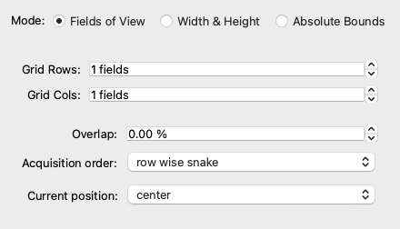

StageWidget

StageWidget
#
Bases: QWidget
A Widget to control a XY and/or a Z stage.
Parameters:
| Name | Type | Description | Default |
|---|---|---|---|
device
|
str
|
Stage device. |
required |
levels
|
int
|
Number of "arrow" buttons per widget per direction, by default, 2. |
2
|
absolute_positioning
|
bool
|
If True, the position displays can be edited to set absolute positions. If False, the position displays cannot be edited. |
False
|
position_label_below
|
bool
|
If True, the position displays will appear below the move buttons. If False, the position displays will appear to the right of the move buttons. |
True
|
parent
|
QWidget | None
|
Optional parent widget. |
None
|
mmcore
|
CMMCorePlus | None
|
Optional |
None
|
enable_absolute_positioning(enabled: bool) -> None
#
Toggles whether the position spinboxes can be edited by the user.
Parameters:
| Name | Type | Description | Default |
|---|---|---|---|
enabled
|
bool
|
If True, the position spinboxes will be enabled for user editing. If False, the position spinboxes will be disabled for user editing. |
required |
setStep(step: float) -> None
#
Set the step size.
step() -> float
#
Return the current step size.
Example#
| stage_widget.py | |
|---|---|
1 2 3 4 5 6 7 8 9 10 11 12 13 14 15 16 17 18 19 20 21 22 23 24 25 26 27 28 29 30 31 32 | |